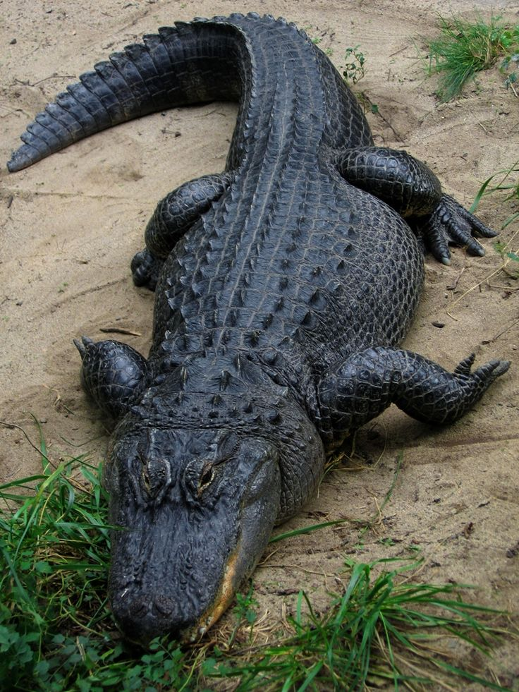

Mamíferos
Animales de sangre caliente con pelo o pelaje. Ejemplos: jaguar, delfín, oso.

Peces
Viven principalmente en ambientes acuáticos y respiran por branquias.

Reptiles
Animales de sangre fría, muchas especies tienen escamas. Ej.: serpientes, tortugas.

Aves
Poseen plumas y la mayoría puede volar. Ej.: cóndor, colibrí, águila.